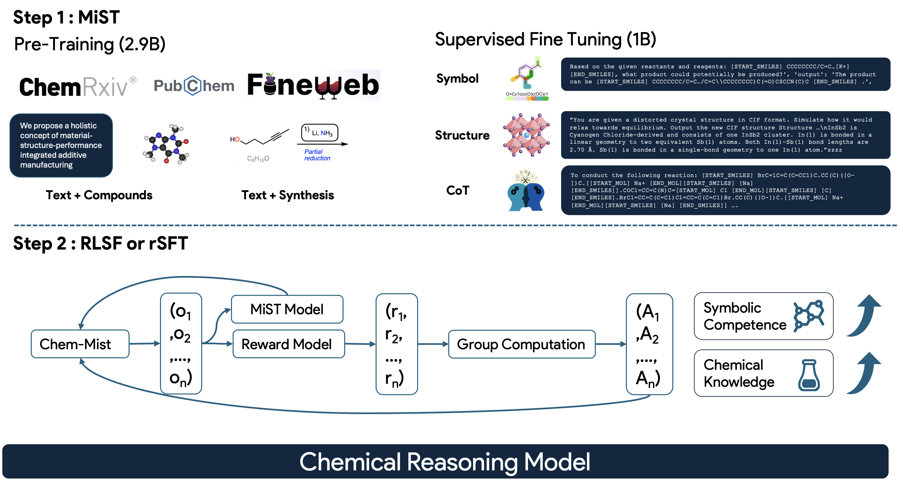

MiST: Understanding the Role of Mid-Stage Scientific Training in Developing Chemical Reasoning Models

RL-based fine-tuning for chemical reasoning only succeeds when the base model already assigns non-negligible probability to correct answers — a property we call "latent solvability."
Direct application of RL fails in chemistry because models rarely generate correct chemical outputs (like valid SMILES strings) in their candidate distributions.
We identify two necessary conditions for successful RL-based chemical reasoning:
1. Symbolic competence — the ability to handle valid chemical strings (SMILES, IUPAC, CIF)
2. Latent domain knowledge — ensuring correct answers exist in the model's prior distribution
MiST includes SMILES-aware data mixing, continued pre-training on 2.9B tokens, and supervised fine-tuning on chain-of-thought reasoning data.
The results are significant: latent-solvability scores improve by up to 1.8× on 3B and 7B models, organic reaction naming accuracy jumps from 10.9% to 63.9%, and inorganic material generation improves from 40.6% to 67.4%.